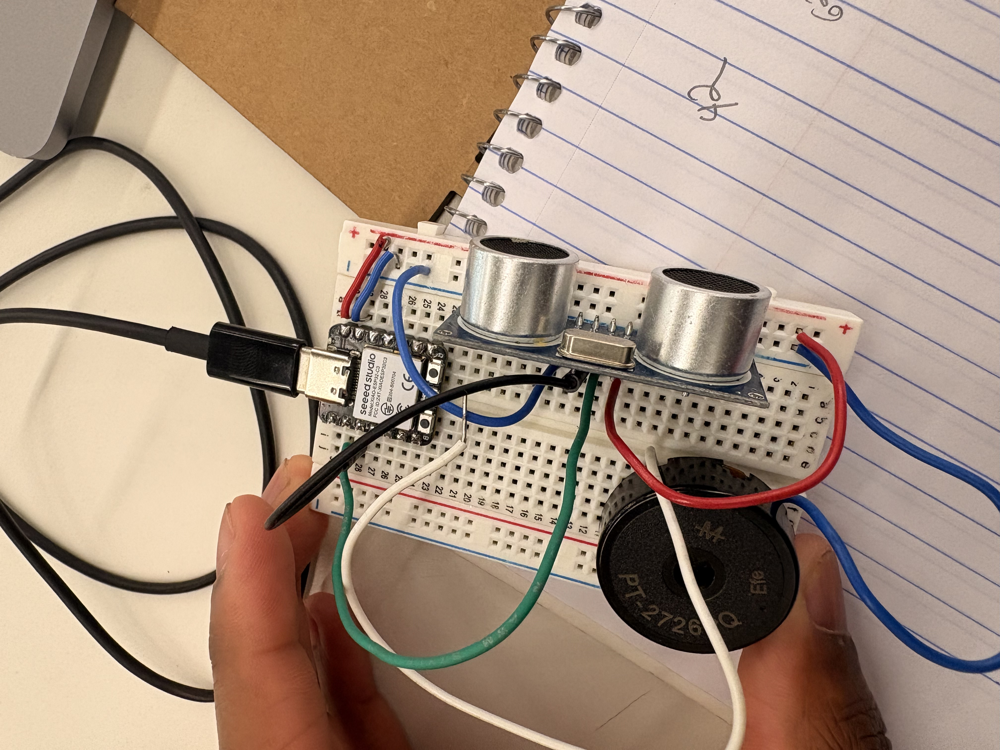
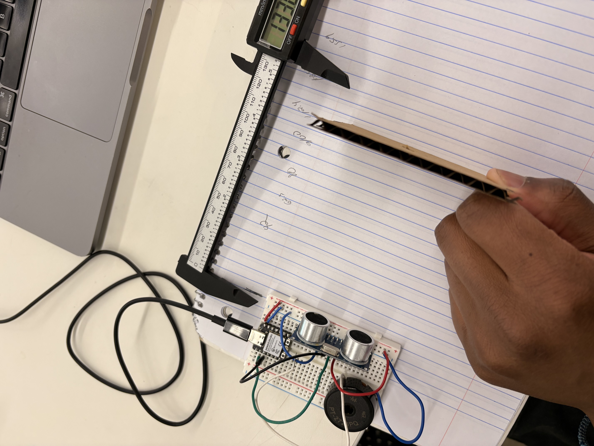

<div class="textcontainer">
<p class="margin"> </p>
<h3>Week 6: Electronic Inputs</h3>
<h4>Assignment 1: Capactive Sensor<h4>
<p>
The sensor we made was used to calculate angles for a full 360 degrees. We constructed our sensor with use of pieces of copper.
One of the pieces was fixed to a point as shown, and the other was secured to a rotating base.
The base had a protactor to get specific angle measurements. As the moving piece of copper got further from the stationary piece the voltage value output into the serial monitor became less and less.
This is shown in our graphy of voltage and angles as well.
</p>
<img src="Screenshot 2026-03-12 at 12.37.10 AM.png" alt="placeholder for image" width=100% height= 50%>
<br>
<img src="Screenshot 2026-03-12 at 12.37.37 AM.png" alt="placeholder for image" width=100% height= 50%>
<br>
<img src="Screenshot 2026-03-12 at 12.38.08 AM.png" alt="placeholder for image" width=100% height= 50%>
<br>
<br>
<br>
<br>
<h4>Assignment 2: [Use + Calibrate Another Sensor]</h4>
<p>
For part 2 I used an ultrasonic sensor. I initially calibrated the sensor using a caliper for distance measurement.
Thos4 values are shown in the graph (in mm). After some more research I found that the more effective methof was using the speed of sound to create a function
thats was fx = (duration * .0343)/2 to turn the duration of time from the trigger sound to when the sound was received by the echo into a cm distance. After
I got this to function I then code in a buzzer, so that when an object is below or equal to a certain distance from the object the buzzer will sound. The code can be found below.
</p>
<p></p>
<br>
<p></p>
<br>
<img src="Screenshot 2026-03-12 at 1.07.16 AM.png" alt="placeholder for image" width=50% height= 50%>
<br>
<h6>Here is the code:</h6>
<pre>
<code style = "color: white">
const int trigPin = D1;
const int echoPin = D2;
const int buzzPin = D0;
float duration, distance;
int time1;
int prevTime;
void setup() {
pinMode(trigPin, OUTPUT);
pinMode(echoPin, INPUT);
Serial.begin(9600);
prevTime = millis();
}
void loop() {
digitalWrite(trigPin, LOW);
delayMicroseconds(2);
digitalWrite(trigPin, HIGH);
delayMicroseconds(10);
digitalWrite(trigPin, LOW);
duration = pulseIn(echoPin, HIGH, 30000);
distance = (duration*.0343)/2;
printTime();
if (distance<= 10){
tone(buzzPin, 500);
}
else{
noTone(buzzPin);
}
}
void printTime(){
time1 = millis();
if((time1 - prevTime) >= 100){
Serial.print("Distance: ");
Serial.println(distance);
prevTime = time1;
}
}
</code>
</pre>
</div>